1はじめに
動きで見る：名前を登録する
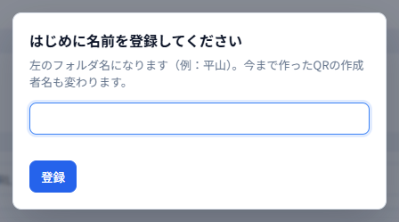
この順に押します
QRコード管理は、くれよん掲載用などのQRを、発行から飛び先の変更、読み取り回数の確認、QRバトルの集計までひとつの画面で管理する社内サイトです。会社の Google アカウント（@k-create.co.jp）で開いてください。
初めて開いたとき：名前の登録
初めて開くと「はじめに名前を登録してください」と出ます。名前（例：平山）を入れて「登録」を押してください。名前は左のフォルダ名と、発行したQRの作成者名になります。あとから左下の自分の名前（「名前を変更」）でいつでも変えられます。名前を変えると、今まで作ったQRの作成者名も変わります。
2画面の見方
動きで見る：画面のどこに何があるか
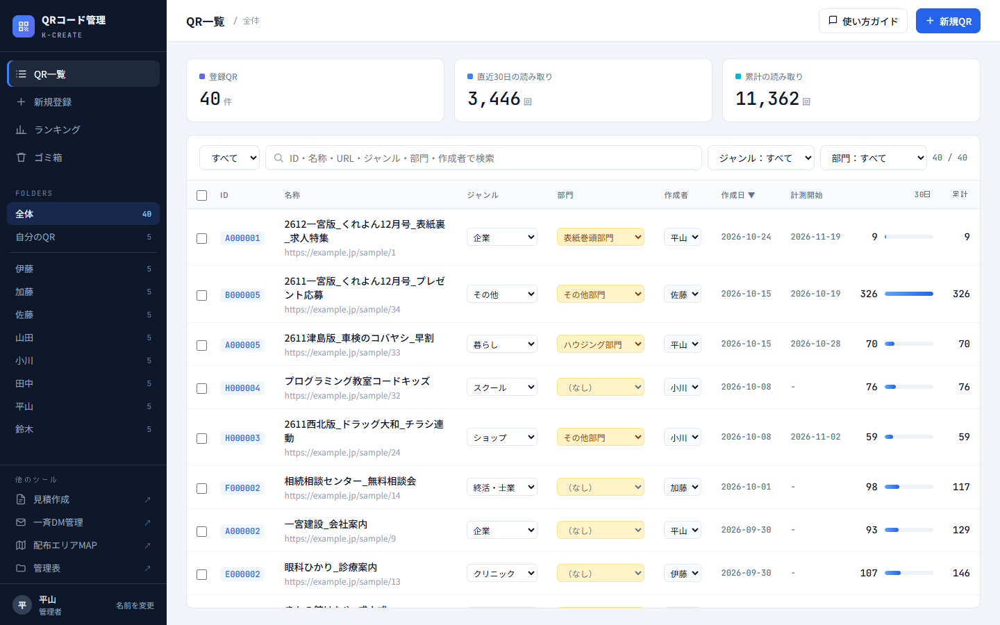
見る場所
- 左のメニュー：QR一覧／新規登録／ランキング（管理者には「ゴミ箱」も）。
- フォルダ：「全体」「自分のQR」と、人ごとのフォルダです。押すとその人のQRだけになり、上の数字もその人の分になります。
- 上のカード：登録QR数、直近30日の読み取り回数、累計の読み取り回数。
- 他のツール：見積作成・一斉DM管理などの社内サイトへのリンクです。
- 右上：「使い方ガイド」（このページ）と「＋ 新規QR」。
3QRを発行する
動きで見る：QRを発行する
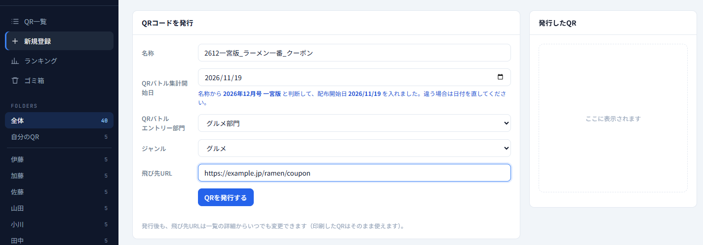
この順に押します
名称の付け方（おすすめ）
2612一宮版_クライアント名_メモ のように、号＋版、クライアント名、メモの順に _ でつなぎます。2612 は 2026年12月号。版は 一宮・江南・岩倉・清須・津島・西北 のどれかです。こう書くと、QRバトルの集計開始日と、エントリーシートのクライアント名・部数が自動で入ります。
| 名称 | 必ず入れます。 |
|---|---|
| QRバトル集計開始日 | 名称に号と版があれば、配布開始日が自動で入ります（青い説明が出ます）。違うときだけ直してください。QRバトルに出さないQRは空欄でかまいません（4. QRバトル）。 |
| エントリー部門 | QRバトル用です。表紙巻頭・グルメ・ビューティー・ヘルス・スクール・ハウジング・その他・求人 の各部門。出さないときは「（エントリーしない）」のまま。 |
| ジャンル | 一覧の整理・営業ツールPDF用です。必ず選びます。 |
| 飛び先URL | http:// か https:// から入れます。 |
IDは自動で付きます
発行すると A000001 のようなIDが付きます。英字は担当者ごと、数字はその人の通し番号です。エントリーシートの「QRコードID」に使います。削除しても番号は再利用しません。
JPEGの大きさ
600／1200／2400px から選べます。入稿用は 1200px 以上がおすすめです。
4QRバトルと集計開始日
各QRは「集計開始日から1か月間」の読み取り回数で競います。集計開始日は、その号の配布開始日です。名称に号と版が入っていれば、次の予定表から自動で入ります。
| 版 | 2026年12月号 | 2027年1月号 | 2027年2月号 |
|---|---|---|---|
| 一宮版 | 11/19 | 12/19 | 1/19 |
| 江南版 | 11/30 | 12/27 | 1/31 |
| 岩倉版 | 11/30 | 12/27 | 1/31 |
| 清須版 | 11/30 | 12/27 | 1/31 |
| 津島版 | 11/28 | 12/25 | 1/28 |
| 西北版 | 12/2 | 1/2 | 2/2 |
予定表に無い号は、一宮版は前月19日、江南・岩倉・清須版は前月末、津島版は前月28日、西北版は当月2日として推定し、「規則から推定」と表示します。配布開始がずれたときは日付を直してください。
名称の版は、稲沢→一宮、大口・扶桑→江南、北名古屋→岩倉、海部→津島、西区・北区→西北 のように書いても判断します。
5QRを探す
動きで見る：QRを探す
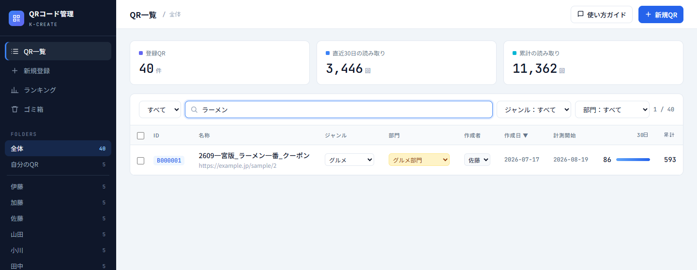
この順に押します
「QR一覧」には全員のQRが並びます。左のフォルダで人ごとに、上の検索でID・名称・URL・ジャンル・部門・作成者で絞り込めます。検索欄の左の「すべて／名称／URL」で、探す項目を限ることもできます。
表の見出し（名称・作成日・30日・累計など）を押すと、その順に並べ替えます。もう一度押すと逆順です。たくさんあるときは200件ずつ表示され、いちばん下の「さらに表示」で続きが出ます。
自分が作成者のQR（管理者は全部）は、一覧のジャンル・部門のプルダウンを変えるとその場で保存されます。
6読み取り回数・飛び先の変更
動きで見る：読み取り回数を見る・飛び先を変える
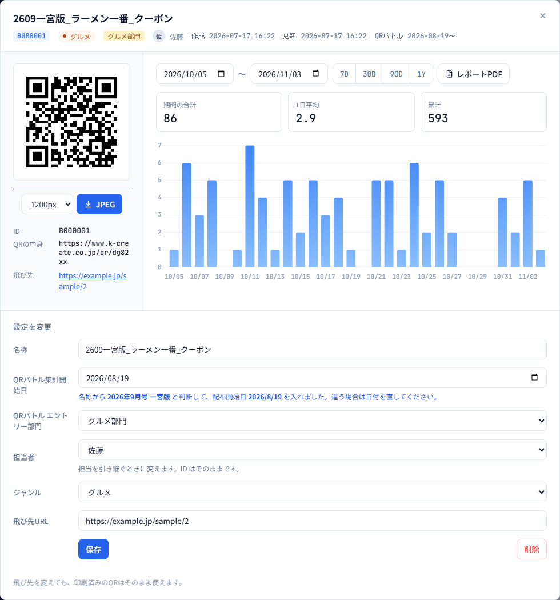
この順に押します
一覧の行を押すと詳細が開きます。日別の読み取りグラフ（7D／30D／90D／1Y、日付を直接選ぶこともできます）、QRの中身と飛び先、JPEGのダウンロードがあります。
名称・集計開始日・部門・担当者・ジャンル・飛び先の変更と削除ができるのは、作成者本人と管理者だけです。他の人のQRは見るだけです（担当者の変更だけは誰でもできます：8. 担当者の引き継ぎ）。
「削除」するとゴミ箱に入り、そのQRを読み取るとケイクリエイトのサイトへ移動します。管理者は元に戻せます（12. ゴミ箱）。
7QRごとのレポートPDF
動きで見る：QRごとのレポートPDFを作る
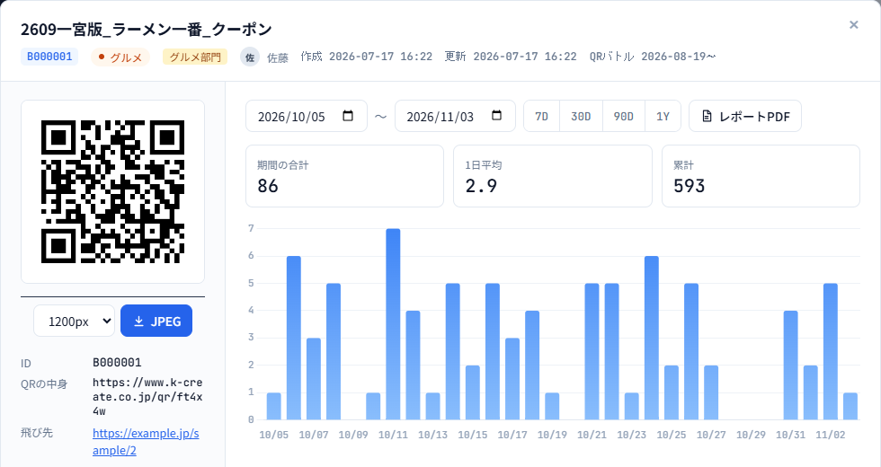
この順に押します
詳細の「レポートPDF」で、そのQRの直近90日の日別グラフ（7日移動平均の線・配布開始日の印つき）と、文章の分析（概況・推移・ピーク・曜日の傾向・ジャンル内の位置・所見）を A4 横1枚にまとめます。プレビューを見て「PDFを出力」でダウンロードします。分析の文章は読み取り回数の推移から自動で作られます。クライアントへの報告に使えます。
8担当者の引き継ぎ
動きで見る：担当者を引き継ぐ
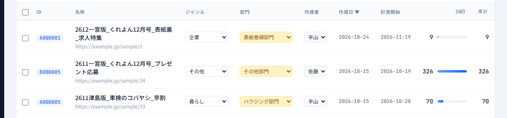
この順に押します
一覧の「作成者」のプルダウン、または詳細の「担当者」で、QRの担当者を別のメンバーに変えられます。一覧で選ぶとすぐ保存されます。他の人のQRでも、担当者の変更だけは誰でもできます（退職・異動の引き継ぎ用）。ID はそのままです。
9まとめて削除
動きで見る：まとめて削除する
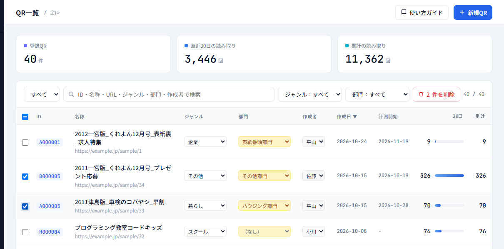
この順に押します
一覧の左端にチェックを付けて「n件を削除」を押すと、まとめてゴミ箱に入れられます。見出しのチェックで、表示中のQRをすべて選べます。チェックできるのは自分が作成者のQR（管理者は全部）です。
削除したQRが読み取られるとケイクリエイトのサイトへ移動し、管理者がゴミ箱から元に戻せます。
10ランキングとExcel
動きで見る：QRバトルのランキングとExcel
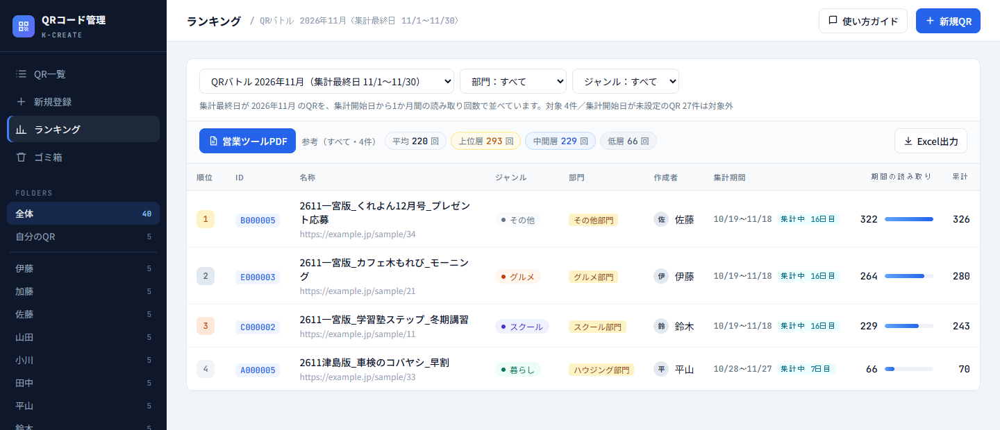
この順に押します
「ランキング」で QRバトル 2026年12月（集計最終日 12/1〜12/31） のように月を選びます。集計最終日がその月に入るQRが、開始日から1か月間の読み取り回数の順に並びます。部門・ジャンルで絞り込めます。期間がまだ終わっていないQRには「集計中 n日目」、まだ始まっていないQRには「開始前」と出ます。
同じ選択肢から「直近30日」や月別のランキングにも切り替えられます。
参考値（平均・上位層・中間層・低層）
「営業ツールPDF」ボタンの右に、表示中のQR（読み取り1回以上）の平均読み取り回数と、回数順に3等分した上位層・中間層・低層それぞれの平均が出ます。ジャンルや部門で絞ると、その目安になります。営業先に「このジャンルの平均はこのくらい」と伝えるときの参考にしてください。
エントリーシートの出力（Excel）
QRバトルの月を選んでいるときに「Excel出力」が出ます。提出用エントリーシートの形（NO.・原稿ID・QRコードID・エントリー部門・クライアント名・媒体種・部数・個数・開始日・終了日）で書き出します。クライアント名と部数は名称から入ります。名称に版名があれば媒体種は「自社紙媒体」、無ければ「他社紙媒体」で部数は空欄です。原稿IDだけは手で記入してください。部門で絞ってから出力すると、部門別のシートになります。
11営業ツールPDF
動きで見る：営業ツールPDFを作る
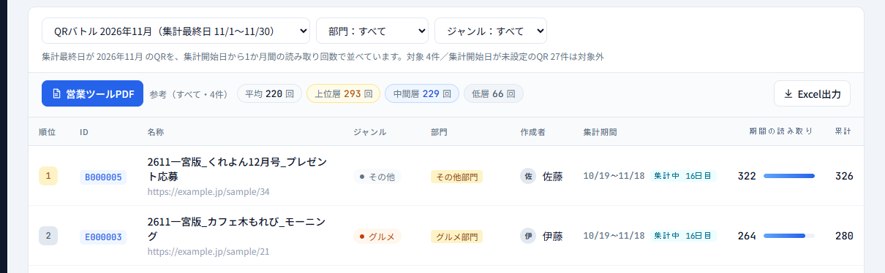
この順に押します
ランキングの「営業ツールPDF」で、ジャンルを選ぶと直近3か月（今月と前2か月。今月は今日まで）の読み取りが多い順に候補が並び、上位8件にチェックが入ります。右のプレビューを見ながら、チェックの付け外しで出力する案件を入れ替えられます（最大8件。6件以下なら1枚に大きめに並びます）。「PDFを出力」で A4 縦1枚の PDF をダウンロードします。
各案件には順位・クライアント名・号と版・3か月合計・1日平均・最多の週・週ごとの棒グラフが入ります。候補はジャンル内の上位40件までで、読み取りが0回のQRは出ません。
12ゴミ箱 管理者
動きで見る：削除したQRを元に戻す
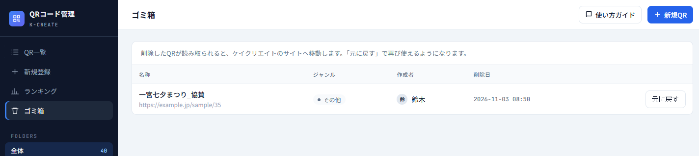
この順に押します
削除したQRの一覧です。管理者のメニューにだけ出ます。「元に戻す」で、そのQRは元の飛び先に戻り、また使えるようになります。
13一括取り込み 管理者
動きで見る：まとめて登録する（一括取り込み）
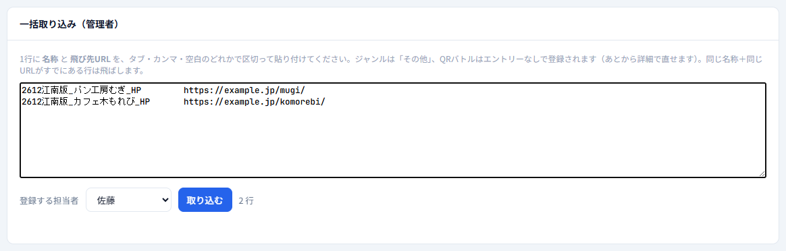
この順に押します
「新規登録」の下にある管理者用の欄です。1行に名称と飛び先URLを、タブ・カンマ・空白のどれかで区切って貼り付けます（Excel からそのまま貼れます）。ジャンルは「その他」、QRバトルの集計開始日と部門はなしで登録されます（あとで一覧・詳細から直せます）。一度に500件まで。同じ名称＋URLがすでにあるものは飛ばします。
「登録する担当者」で選んだ人の名義・ID で登録されます。
14スマホで使う
動きで見る：スマホで使う
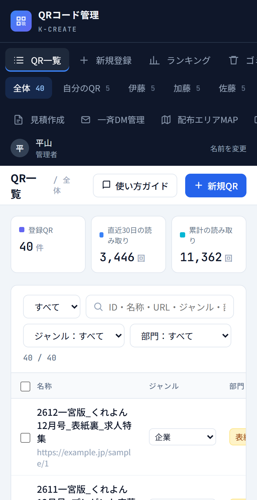
見る場所
スマホでも同じURLで使えます。メニューとフォルダは上に横並びになります。表は横にスライドして見てください。
15よくある質問
- 開いても「ログイン情報が取得できません」と出ます。
- 個人の Google アカウントで開いています。会社のアカウントに切り替えてから開き直してください。
- 読み取り回数が「−」になっています。
- 読み取り記録サーバーに一時的につながらないときの表示です。少し待ってページを読み込み直してください。QRの転送自体は動いています。
- 自分で読み取って試したら回数に入りますか？
- 入ります。人がスマホで読み取った回数を数えます。LINE などのリンクプレビュー取得は数えません。
- 集計開始日を入れ忘れました。
- 一覧から詳細を開き、集計開始日を入れて保存してください。名称に号と版があれば候補が入った状態で開きます。
- 他の人のQRを直したいです。
- 作成者本人か管理者に依頼してください。担当者の変更だけは誰でもできます。
- 間違えて削除しました。
- 管理者がゴミ箱から元に戻せます。管理者に相談してください。